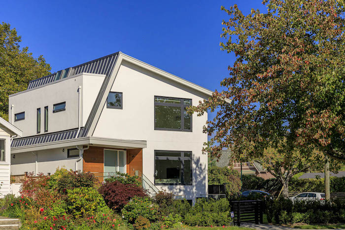

<div class="container project-view">

    <div class="row">
        <div class="col-md-8 project-images">
            
            
            
        </div>
        <div class="col-md-4">
            <div class="project-info">
                <h2>Park Drive, Vancouver Westside</h2>

                <div class="details">
                    <div class="info-text">
                        <span class="title">Date</span>
                        <span class="val">August 2019</span>
                    </div>

                    <div class="info-text">
                        <span class="title">Location</span>
                        <span class="val">Park Drive, Vancouver</span>
                    </div>

                    <div class="info-text">
                        <span class="title">Details</span>
                        <span class="val">Single Family Custom Modern Home</span>
                    </div>

                    <div class="info-text">
                        <span class="title">Architect</span>
                        <span class="val">Diamond Architecture Group</span>
                    </div>

                    <div class="info-text">
                        <span class="title">Design</span>
                        <span class="val">Janis Gosbee Designs</span>
                    </div>
                </div>

                <p>Custom home consisting of 3 levels built on a corner lot with beautiful curb appeal. This modern house was designed with intricate angles and corners with the finest attention to detail and materials. The house feautures a metal roof, level-5 finishing, garage with EV charging, reduntant power, radiant heating, large Vinyltek windows and open plan living. The house features 5 bedrooms 3.5 bathrooms, custom millwork and high ceilings. With 2 window wells, front and back, the basement receives a lot of external light and feels like a first floor!</p>

                <p>
                    <h4>Our Solution</h4>
                    SVM managed the entire construction of this custom home including sourcing materials, labour and managing all the phases of construction, quality assurance and building inspections. SVM worked with various teams including architects, designers, geo-technical contractors, energy contractors and building inspectors. The house was completed on time and budget.
                </p>
                </p>


            </div>
        </div>
    </div>
</div>
